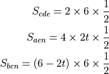
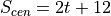

对称性¶
下面是一道比较简单的题目，但从中可以找到一些中学数学需要掌握的对称性思维的感觉，所以总结一下。
如下图：

正方形ABCD，边长为6，从D点向射线CD方向释放一个动点M，匀速1unit/s的运动，从A点向射线AB方向释放另一个动点N，匀速2unix/s。当时刻t=0的时候，M，N都在起点D、A上，问三角形CEN的面积S和t的函数关系。
题目本身没有什么难度，就是用正方形的面积减去三个直角三角形的面积：

所以：

但通常我们会怀疑这个结果是否唯一，因为这幅图还可以变成这样：

我们会觉得这个计算是否需要重新做一次，甚至，如果你想得不清楚，会觉得这是另一副 图，想着重新做辅助线，另外找办法来计算，比如这样：

但这种大部分点都不变，仅仅是动点越界的情况，通常都会保持原来的图的特征的，仅仅 部分变量变成了负值，所以，我们要重新用原来的图的特征来考量新的图的“变化”。
比如，如果N点越过了B点，那么原来的三角形是否依然存在？其实是存在的，CDE的计算方 法没有任何变化，AEN也没有，CBN也没有。唯一的区别是，CBN对整个正方形是个加法关系 ，而不是原来的减法关系。一旦我们这样看，CBN和AEN互相重叠的部分仍然会互相冲减。 所以，我们上面的公式其实是自动生效的，CBN的计算方法也不需要改变，因为6-2t正好在 越过B点后就成为负值了，这个计算过程是不需要改变的。
做几何题做多了，应该有这样的敏感，通常，单个要素的变更，是不应该修改基于代数式 计算的结果的。这是一种对称性，需要在做题的过程中体会出来。虽然通常我们在有时间 的时候需要对此进行校验，但至少校验的方向应该是从原来的公式中找，而不是重新建一 个逻辑。